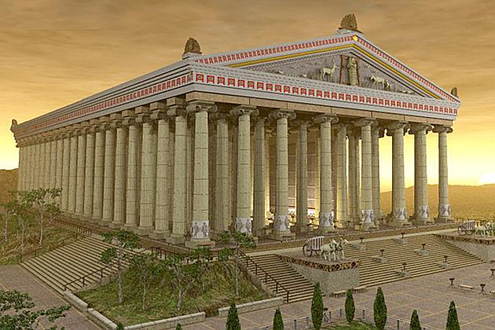
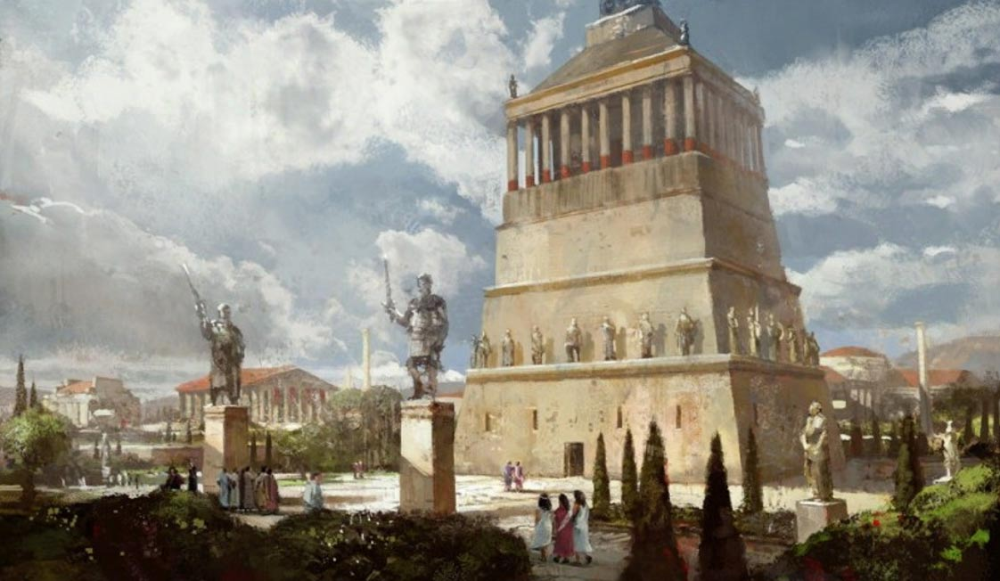
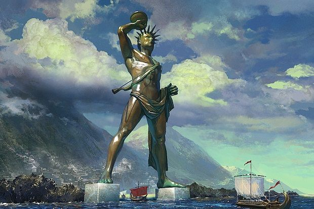
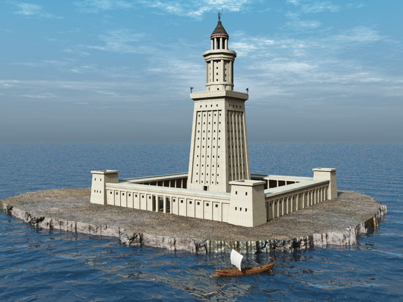
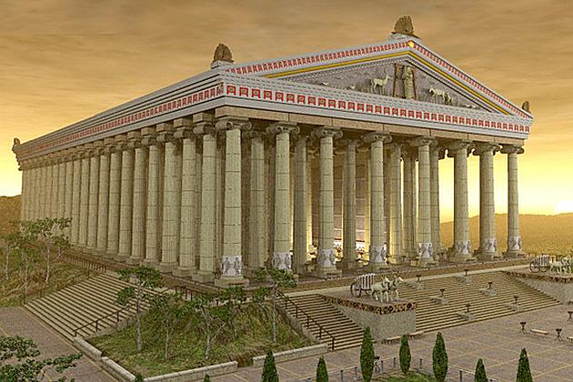
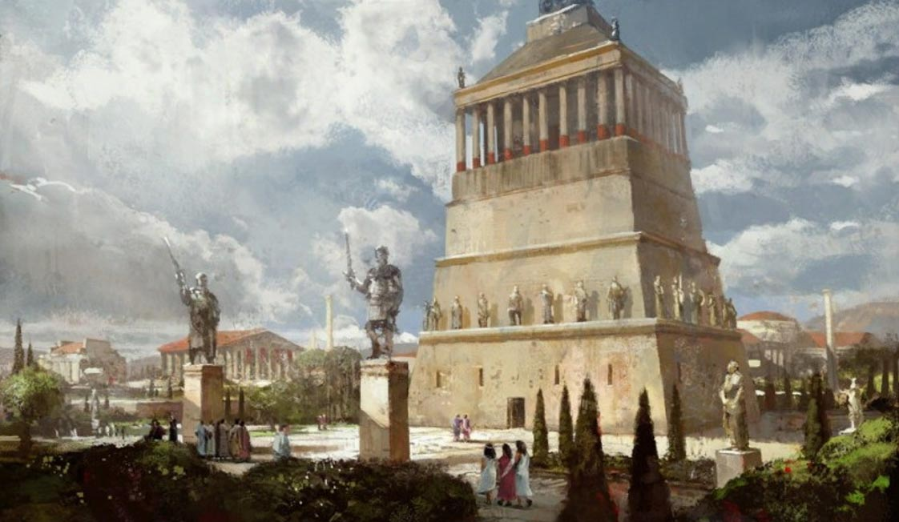
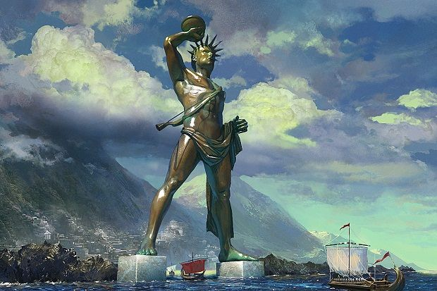
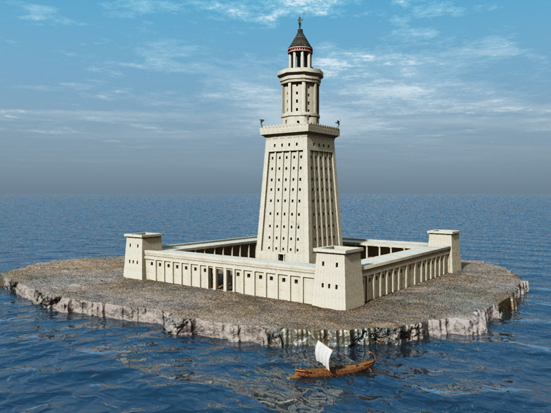

Најстарије помињање листе светских чуда потиче од историчара Херодота (око 450. п. н. е.). Први пут свих седам чуда су заједно поменута у епиграму феничанског писца Антипатроса из Сидона (2. век п. н. е.), који је описао путопис по источном Медитерану свога времена. Грци су овај списак назвали: Τὰ ἑπτὰ θεάματα τῆς οἰκουμένης [γῆς] – „Седам атракција насељене Земље које треба обавезно видети“. Седам чуда је вероватно одабрано зато што је овај број за старе Грке имао симболику магичног броја. Опис седам светских чуда се налази у трактату из 6. века нове ере „О седам светских чуда“ (De septem mundi miraculis).

 






